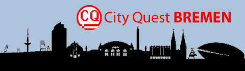

goto n
Start in the city centre. Follow the compass to each point and answer the ghost with keywords. Type help at any time. Tap a message to skip the typing.
Original concept 2012: D. Davydenkova, S. Kozuhovskij, Y. Maslout, P. Szmidt.